Verschlüsselung im Alltag
Stefan Schlott
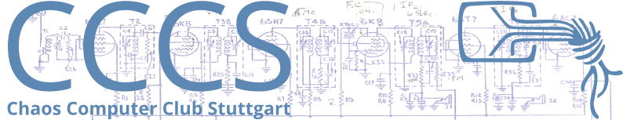
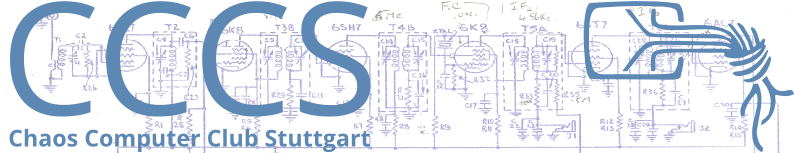

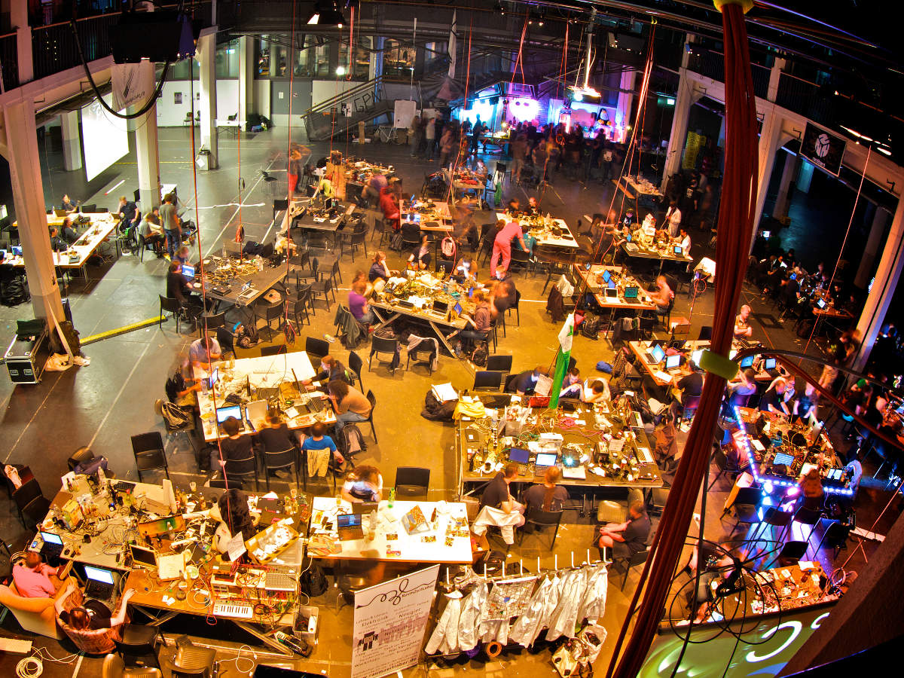
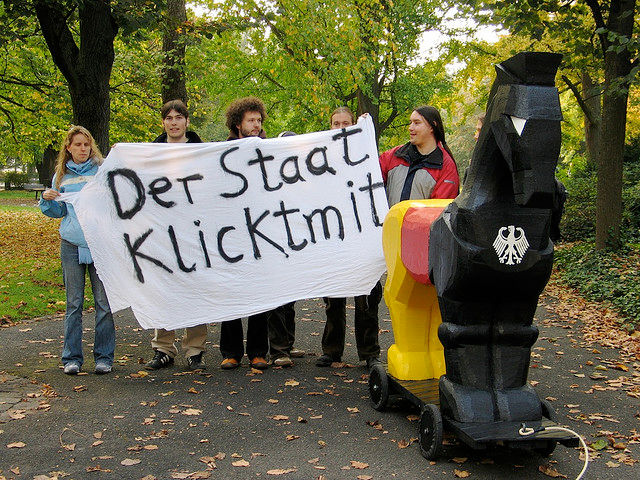
Sender und Empfänger benutzen gemeinsames Geheimnis
Typischerweise sehr performant
Problem: Austausch des Schlüssels
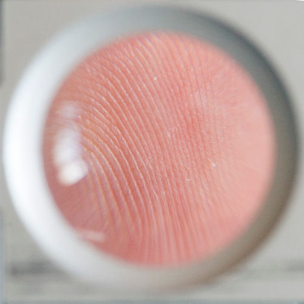 Kryptographische Hashfunktion
Hashes: Verdichtung von Daten auf eine charakteristische (kurze) Sequenz
Besonderheit in der Kryptographie: Finden von Daten zu einem gegebenen Hashwert schwierig
Statt einem Schlüssel für Ver- und Entschlüsselung: Schlüsselpaare (heben Wirkung gegenseitig auf)
Verschlüssel-Schlüssel (Public Key) kann öffentlich sein
Problem: Habe ich wirklich den Schlüssel des gewünschten Empfängers?
SSL sorgt für das "Schloß im Browser"
Protokoll zur Authentisierung und Verschlüsselung von Datenverbindungen
...und mehr :-)
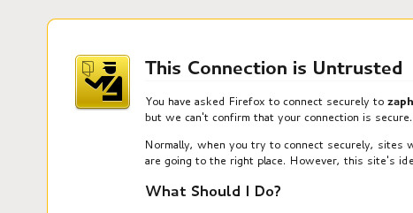
Lösung bei SSL: Certification Authorities (CAs)
Vertrauenswürdige Zertifizierungsstellen
Bestätigen von Identitäten oder Weitergabe der Verantwortung
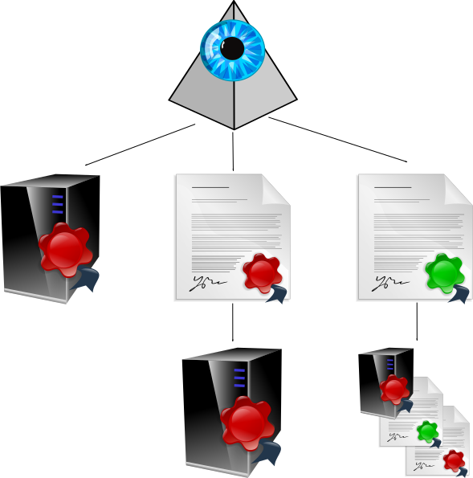
Die Kette der Beteiligten:
Sicherheit fängt immer beim Benutzer an!
Verwenden der falschen Adresse:
Falsches Verhalten:
Eigener Rechner: Infektion mit Malware, Backdoor, ...
Zielrechner: Eindringen in das System
In beiden Fällen:
Malware im System kann...
Verbindung: Im LAN, Internet-Cafe, Router des ISPs, Proxy der Firma, ...
Man-in-the-Middle: Abhören und/oder manipulieren
sslstrip agiert als transparenter Proxy
Parst durchlaufende Daten
Ersetzt alle https-Links durch http
Bei vielen Websites sind alle Seiten sowohl per http als auch per https abrufbar
Folgt man nur den Links, gelangt man nun nie auf die verschlüsselte Seite
Ganz fatal bei eingebetteten Formularen
⇒ Wichtige URLs immer prüfen!
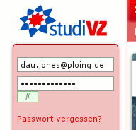 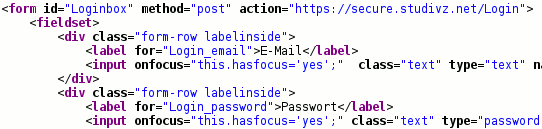
...und mit sslstrip:
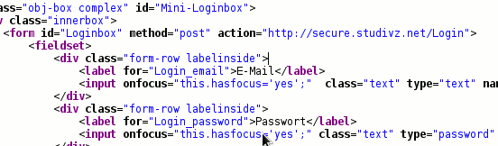
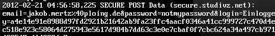
sslsniff, webmitm, iSniff, ...: Ebenfalls transparente Proxy
Besitzen/erstellen eigene CA
Beschreibungstext in CA beim Erstellen: Beliebig!
Beim Verbindungsaufbau: Neues Zertifikat für Seite generieren
Browserwarnung (wenn CA unbekannt)
⇒ Bei Browserwarnung: Höchste Alarmstufe, nicht einfach wegklicken!
Man in the middle + im Browser hinterlegte CA:
Eines der Probleme: Jede CA (root und intermediary) darf beliebige Zertifikate ausstellen
Syrien erlangte Zertifikate für einige Seiten (Facebook, Google, Tor, ...)
Einige CAs (z.B. Diginotar oder Verisign) wurden in jüngster Zeit kompromittiert
Trustwave verkaufte Intermediate-CA-Zertifikate - angeblich an Firmen, angeblich gängige Praxis
Viele CAs, teils Firmen, teils von Regierungen
Bei wichtigen Seiten: Fingerprint des Zertifikats von Hand prüfen
Sticky Certificates
Idee: Ein Man in the Middle kann nicht alle Verbindungen zu einem Ziel angreifen
Im Netz verteilte Notare fragen das Zertifikat eines Ziels ab und liefern es dem Browser
Browser prüft Übereinstimmung aller Notarantworten
Benutzer wählt Notare selbst
E-Mails: Die Postkarten des Internets:
Keine Ende-zu-Ende-Verschlüsselung
Pretty Good Privacy: Projekt von Phil Zimmermann, 1991 begonnen
Funktionierte so gut, daß er in die Mühlen der US-Dienste geriet :-)
Gründung der Firma pgp.com, Verkauf an Symantec
Freie Implementierung: Gnu Privacy Guard
In Linux-Distros dabei, Binaries für Windows (incl. Support für Outlook 2003/2007), MacOS
Direkter Support durch einige Mailprogramme (wie mutt oder Claws), Plugins z.B. für Thunderbird
Public-Key-Verfahren: Public Key und Secret Key
pub 1024D/0x75FD7074 2004-12-31 [expires: 2013-01-01] uid [ultimate] Stefan Schlott (PGP mail only) <stefan.pgp@ploing.de> uid [ultimate] Stefan Schlott <stefan.schlott@ulm.ccc.de> sub 3072g/0xE9D795D0 2004-12-31 [expires: 2013-01-01]
Verschiedene Verfahren: RSA, DSA/ElGamal
Schlüssellänge: Lieber zu groß :-)
Erzeugung braucht "gute" Zufallszahlen.
Idealerweise nicht auf einem frisch gestarteten Rechner durchführen.
Sicherung mit Passphrase (Mantra)
Was passiert, wen...
Dein persönliches Problem! Treffe Vorkehrungen!
Ablaufdatum (kann nachträglich geändert werden): Begrenzt den Schaden
Erzeuge ein "Key Revocation Certificate" und hebe es an sicherer Stelle auf: Spezielles Zertifikat, mit dem man seinen eigenen Schlüssel für ungültig erklärt
Ich will jemandem schreiben und brauche seinen Public Key... woher bekomme ich den?
Suchmöglichkeiten: Name, E-Mail, Schlüssel-ID
Mailadresse auf Keyserver sichtbar (mögliche Spam-Quelle)
Keine zentrale Instanz wie bei SSL, sondern Web of Trust
Überprüfung des Schlüssels mit Fingerprint (auf authentischem Weg austauschen, z.B. am Telefon vorlesen oder persönliche Übergabe)
pub 1024D/0x75FD7074 2004-12-31 [expires: 2013-01-01]
Key fingerprint = 9548 55E2 AC01 4862 BFE4
670E FDF4 4AE8 75FD 7074
Festhalten dieses Wissens durch Signatur des Schlüssels
Signatur kann weitergegeben werden: Wissen für andere verfügbar
Festlegen des Vertrauensgrads in die Sorgfalt bei der Prüfung anderer: "Partial Trust" / "Full Trust"
Vertrauen wird nur berücksichtigt, wenn ein Schlüssel als verifiziert gilt:
PGP warnt bei der Verwendung nicht verifizierter Schlüssel
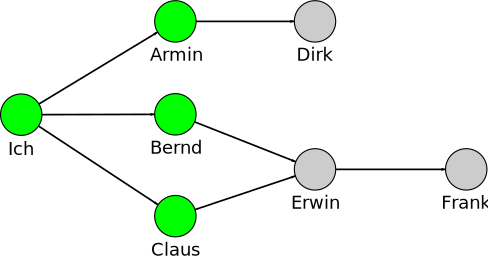
Alle direkt signierten Schlüssel gelten als verifiziert
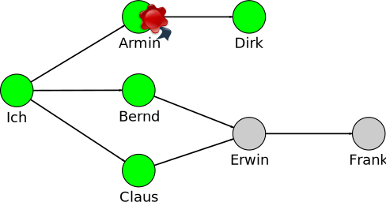
Armin ist verifiziert + volles Vertrauen: Dirk verifiziert
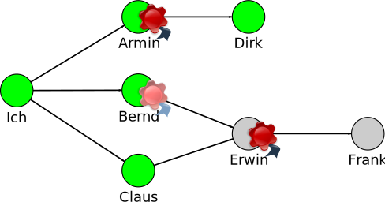
Vertrauensinfo alleine: Bernd noch nicht zertifiziert!
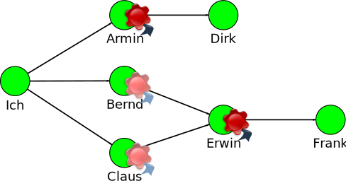
Erst durch (mindestens) teilweises Vertrauen in Claus werden Erwin und Frank verizifiert
Mit Web of Trust kann das CA-Modell nachgebildet werden (nicht aber umgekehrt)
Introducer: Vertrauenswürdige Person, die viele weitere Schlüssel signiert hat
Ziel: In einer Variante E-Mails mit Sicherheitsgarantie (Verschlüsselung) und Rechtsverbindlichkeit, ohne zusätzliche Hard- oder Software
Dahinterliegende Technik: Normale Mail-Komponenten
Vertragliche Garantien für Transport
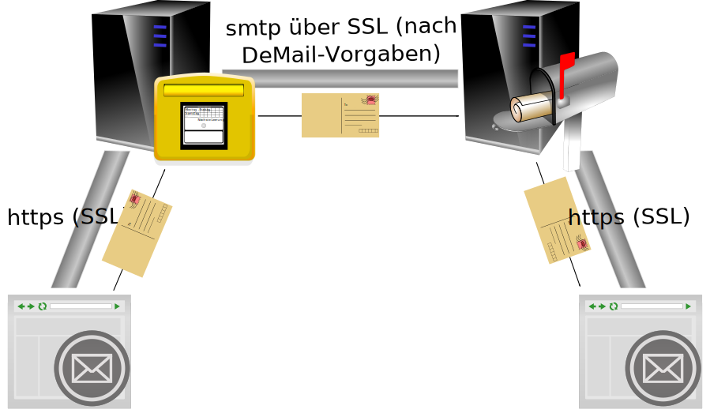
De-Mail ist eine Art "kryptographische Rohrpost":
Aus Security-Sicht kein Vergleich zur Sicherheit von PGP
"Overlay-Protokoll" über jedem (beliebigen) Chatprotokoll
Als Bibliothek und Plugin für verschiedene Chatclients verfügbar
Verschlüsselung, Authentisierung
Deniability: Außenstehende erhalten kein Indiz über die eigene Identität
Perfect Forward Secrecy: Selbst bei Verlust der eigenen Schlüssel können alte (mitgeschnittene) Sitzungen nicht entschlüsselt werden
Bei der ersten Nutzung: Public-Key-Paar generieren
Verbindungsaufbau im Chatclient: Manuell oder durch automatische Erkennung (charakteristische Folge von Whitespace am Ende einer normalen Nachricht)
Austausch der Public Keys, Aushandeln eines Sitzungsschlüssels
Dann: Unauthentisierte Verbindung
Wieder dieselbe Frage: Spreche ich mit dem richtigen?
Authentisierung über zweiten Kanal (z.B. Telefon), Austausch von Fingerprints
Information über erfolgreiche Überprüfung wird lokal gespeichert
Kein Web of Trust, etc.
Beim Beenden einer Verbindung: Aufpassen, daß man nicht versehentlich unverschlüsselt weitertippt (manche Clients verhindern dies)
Vorsicht: OTR sichert nur die Übertragung über das Netzwerk! Keine Sicherung der Chatprotokolle des Clients!
Chatprotokolle werden typischerweise im Klartext gespeichert (aktuelles Negativbeispiel: Bradley Manning)
⇒ Häufig gehörte Empfehlung: Solche vertraulichen Chats nicht protokollieren (wirklich "Off the record")
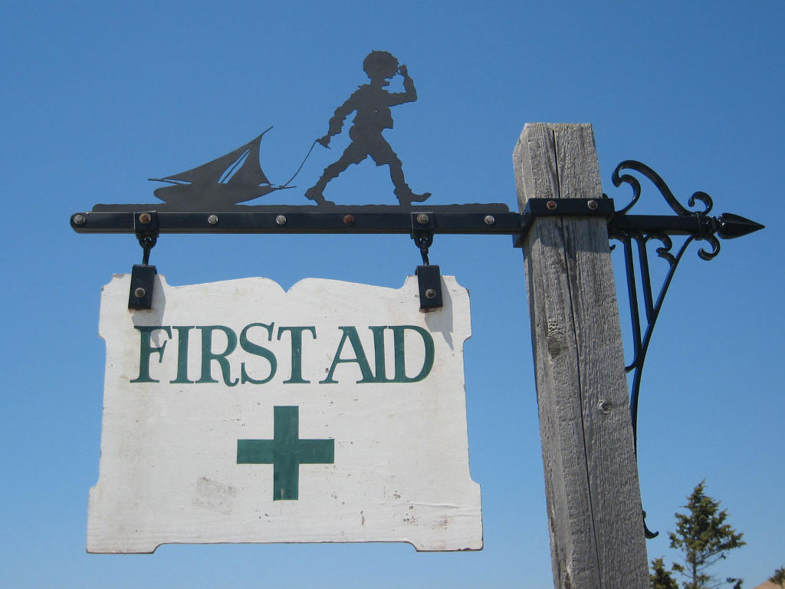

This work is licensed under a Creative Commons Attribution-NonCommercial-ShareAlike 3.0 Unported License.
{kind=link}